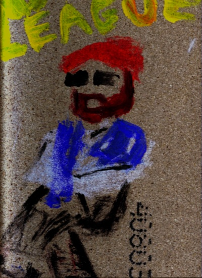

Viel Lärm ⚓︎
Es ist wieder soweit. Eine neue Seite. Ein neues Projekt. Ich habe wieder angefangen Gitarre zu lernen. Ein bisschen Meditation, um meine innere Mitte zu finden. Ein paar hochwertige Farben bestellt - ich wollte eigentlich immer Maler werden, ich hatte nur nie den Platz. Autor bin ich schon, habe das Manuskript nur nie verschickt. Oder gedruckt.
Schriftsteller sind immer die anderen. Frag doch mal auf einer Party rum - alles Kreative. "Ich war das Mädchen, das immer am besten zeichnen konnte. Wenn wir Plakate machten oder so, wollten immer alle meine Hilfe." Sie entwickelt und vertreibt jetzt Finanzprodukte.
Mein Arbeitskollege stimmt auf der Ukulele Wonderwall an. Das Instrument passt in seinen Rollcontainer. Wir wechseln öfter das Büro. Ich kritzele ein paar kleine Figuren auf meinen Notizzettelblock, habe schließlich noch drei Minuten Pause und nichts zu verschenken. Es ist fast ein Comic, aber mir fehlen Aufbau und Pointe. Nur ein paar Figuren schweben durch den Raum.
Bahnfahren im Herbst ist wie ... ⚓︎
Laubgolden regnet es vor den Schiebefenstern. Regelmäßig schüttelt es ihn, bebt unter ihm der Waggon. Tak-Tok, Tak-Tak. Noch jung ist der Morgen; noch frisch ist das fallende Laub; noch feucht ist es vom Morgentau. Der silbrig glänzende Grund weckt in ihm Gefühle der Euphorie. Gedeckt zieht die Welt vor seinem Fenster vorüber.
Das Studium der Philosophie ist ein langwieriges Geschäft. Die Beschäftigung mit einzelnen Autoren ist dabei gar langatmig. Hier zeigt sich eine die Neigung des Menschen: Die Konzentration auf einzelne Individuen, sogar zu Lasten einer Idee. Gerade die Philosophie - die Liebe zur Weisheit, wenn man es übersetzt - sollte dies begriffen haben, sollte darüber hinausgewachsen sein. Doch dem ist nicht so.
Abrupte Dunkelheit; abruptes Licht. Die Welt verdunkelt sich, die Lichter im Waggon springen an. Der Tunnel ist schnell durchquert. Die elektrischen Lichter erlöschen rasch; die Strahlen der Sonne reichen immer weiter über den Horizont und belichten die Stoppelfelder, die er nun sieht. Golden glänzt das vertrocknete Gestänge, wieder erfrischt vom Nebel letzter Nacht.
Wer Kant nicht kennt, kann nicht teilnehmen. Doch wen kümmert Kant? Einige seiner Ideen können wir verwenden. Was sollen wir mit dem Rest? Mit den schlechten Ideen? Und wen kümmert seine Vita? Die akademische Philosophie hat als Philosophie versagt, da diese grundlegende Weisheit sie nicht schert. Andererseits: Die akademische Philosophie kümmert keinen. Vielleicht auch deswegen? Schlechtere Historiker, die sich auf die Gedanken Toter verstehen.
Die Felder weichen den Ansätzen einer Stadt; erste Gebäudegruppen sind erkennbar. Bald ist die Strecke umgeben von Gärten, bald sind es Wohnhäuser. Auf einer Gartenlaube steht ein Mann, der sich aus einem Eimer Zucker ins Gesicht schüttet.
2009-03-02-liege ⚓︎
Ein scheinbar in der Luft sitzender Mann, schwarze Hose, weißes Hemd. Um seine Schultern liegt ein blaues Tuch. Sein vollbärtiges Antlitz schmücken eine Sonnenbrille und ein nahezu formloser roter Hut. Darüber steht in großen gelben Buchstaben undeutlich ein Wort, das etwa "League" sein könnte - gewiss ist dies jedoch nicht.
Dieses Bild wurde mittels eines trockenen Baguettes mit Acryl auf Holz gemalt.
Gekochtes für Tiere ⚓︎
Ich arbeite seit zwei Jahren als Koch. Oder sagen wir, Küchenhilfe. Oder sagen wir ich schneide Karotten für einen Hungerlohn klein und würde durch eine Maschine ersetzt werden, wenn die nicht so teuer wäre; das wurde gleich am Anfang so festgestellt, damit auch keine Missverständnisse auftreten.
Er ist ein kleiner Grieche. Also der Chef. Das Restaurant ist italienisch; fragt nicht, ich verstehe davon nichts, ich bin nicht mal Deutscher, bei uns zu Hause gibt es keine Restaurants. Ich weiß nicht mal so genau, was außerhalb der Küche passiert. Morgens wische ich mit die Tische, abends auch. Zwischendurch könnte hier ebenso gut eine Mathematikvorlesung stattfinden, ich weiß es nicht. Abends sieht es sehr chaotisch aus, sie fressen wie Schweine. Einmal habe ich Spaghetti am Hutständer gefunden. Tragen die Leute draußen noch Hüte? Manchmal schlafe ich in der Küche, die Schichten sind nicht immer gut verteilt, irgendwo muss das Geld herkommen.
Wobei, wofür brauche ich eigentlich Geld? Ich bin mir nicht sicher, ob ich eine Wohnung habe. Ich greife in meine Taschen, nichts. Ach natürlich - Arbeitskleidung. Aber wo sind eigentlich meine richtigen Sachen? Ich sehe auf, um mich. In meiner einen Hand Karotten, in der anderen - Karotten. Moment. Ich sehe mich um, da hinten raucht und dampft es, ein paar Leute sputen scheinbar im Kreise, ein Pinguin kommt manchmal herein um Teller abzuholen und serviert dann wohl irgendwem. Vielleicht sind meine Sachen am Hutständer?
Ich gehe in Richtung der freischwingenden Tür, die in den Esssaal führt; ich schreite hindurch. Der Pinguin sieht mich überrascht an, von den Tischen blicken mir Ratten entgegen. Ein Pelikan legt seinen Flügel auf meine Schulter. "Das hier ist nicht der richtige Ort für dich."
Warm werden ⚓︎
Klirrende Kälte liegt in der Luft, hat sich in Form von Eispanzern auf Fahrzeuge gelegt, tanzt um den frierenden Dunst meines Atems. Ein paar Plättchen brechen von der Folie, als ich den Roller abdecke. Er selbst: Ein unvereistes eisernes Ross. Mir aber frieren die Finger, als ich ihn schiebe; das Eisen der Bremsen gleicht dem Eis ringsumher. Ich trete in den Kickstarter, doch der Kaltblüter schweigt.
Schweigend sitzen wir da; beide Gäste, doch ohne den -geber. Jede Phrase schmerzt noch vor dem Aussprechen, bleibt einem im Halse stecken. Das Wetter zu klein, das Klima zu groß - und was machst du so in deiner Freizeit? Ja, nichts Besonderes eigentlich. Ach.
Die Paragraphen quälen sich aufs Papier. Keine Rede von Schreibblockade - es fließt, doch klumpiges Öl und nicht Wasser scheint sich aus der Mine auf's Papier zu ergießen. Es selbst kein Schwamm, mehr eine Folie, und Ideen tropfen vom Tischrand in den Teppich.
Dirt Roll ⚓︎
Unerträgliche, schwelende Hitze. Surrende Insekten, die im aufsteigenden Dunst über dem Grund tanzen. Sie sind auf Blut aus. Wenn Sonne und Surrer die Sau plagen, schmeißt sie sich in den Dreck. In's kühle, schlammige Nass. Stechmücken, go home.
Könnte ich wohl auch machen, aber meine Plagegeister sind subtiler im Blutsaugen und Ausbrennen. Ich werfe mich nicht in den Dreck, aber in Schale. Dicker, schwarzer Stoff. Schwere Ketten. Dunkle Gläser. Eine Verschalung für das Wesen, um das Außen zu vertreiben.
Hochwerkig ⚓︎
- Der Schreiber
-
Mit sieben Siegeln hab' ich dieses Buch verschlossen,
Durch Lesequal wird es erst recht genossen. - Der Leser
- Und schon bin ich verdrossen.
- Der Schreiber
-
Lies sie nur durch, die höchsten der Geschichten,
Worin Geheimnis' Reih' an Reih' sich stets verdichten
Und niemals die Metapher spricht.
Bist du darauf nicht auch erpicht? - Der Leser
-
Muss enttäuschen, bin ich nicht.
So Form den Inhalt übersteigt,
Ist's besser, wenn man schweigt.